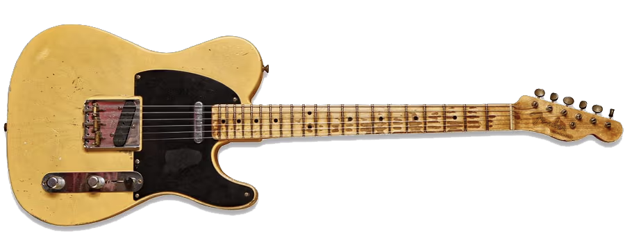
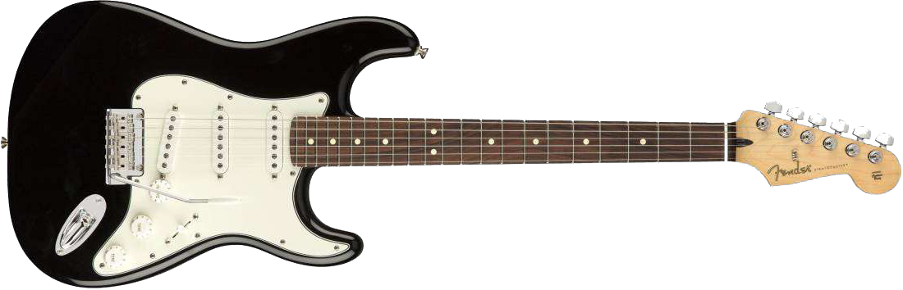
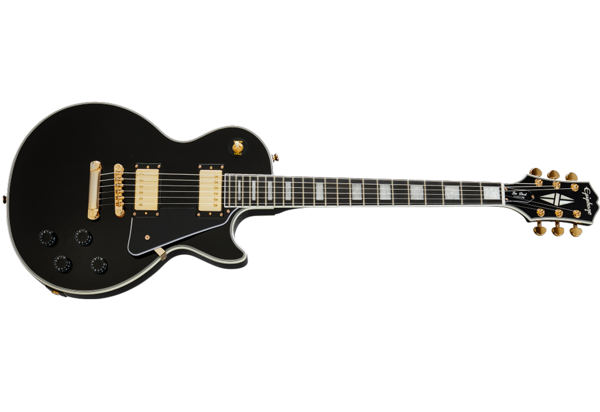
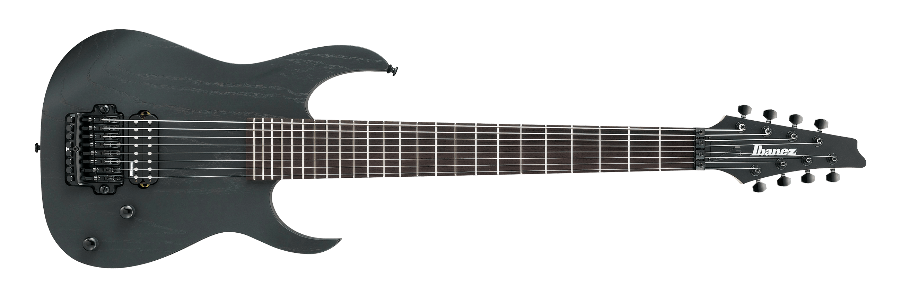

telecaster
telecaster was one of the first electric guitar models that was made by Leo Fender and George Fullerton. telecasters have two single-coil pickups, two nubs one for valume and one for tone, and there is a three-way switch and they use an ashtray bridge
stratocaster
stratocaster is another type of electric guitar wich has three single-coil pickups it has three nubs for valume and tone and a five-way switch. mostly they have a pivoting bridge
les paul
les paul is a different style of electric guitars because it uses two humbucker pickups and it hase one tone and one valume nub for each pickup it also has a different style of body, in 1950s les pauls where mostly famous with a unique golden color lots of famous solos that we have heared are played on this guitar. they have a nashvile bridge
some guitars are a bit different
some guitars like the one on above are different, there are 7 or 8 string guitars that are used in heavy metal songs and they are really papular between metal fans
Es guitars

these guitars have a sami-hallow that means they have a mostly hallow body with a solid block of wood under the pickips and strings, hollow body guitars make a sound that is not really greate to hear in a song but sami-hollow guitars dont make that sound but they have the advantage of hollow body guitars and they make a greate tone, they are mostly used n jazz songs.they have two humbucker pickips